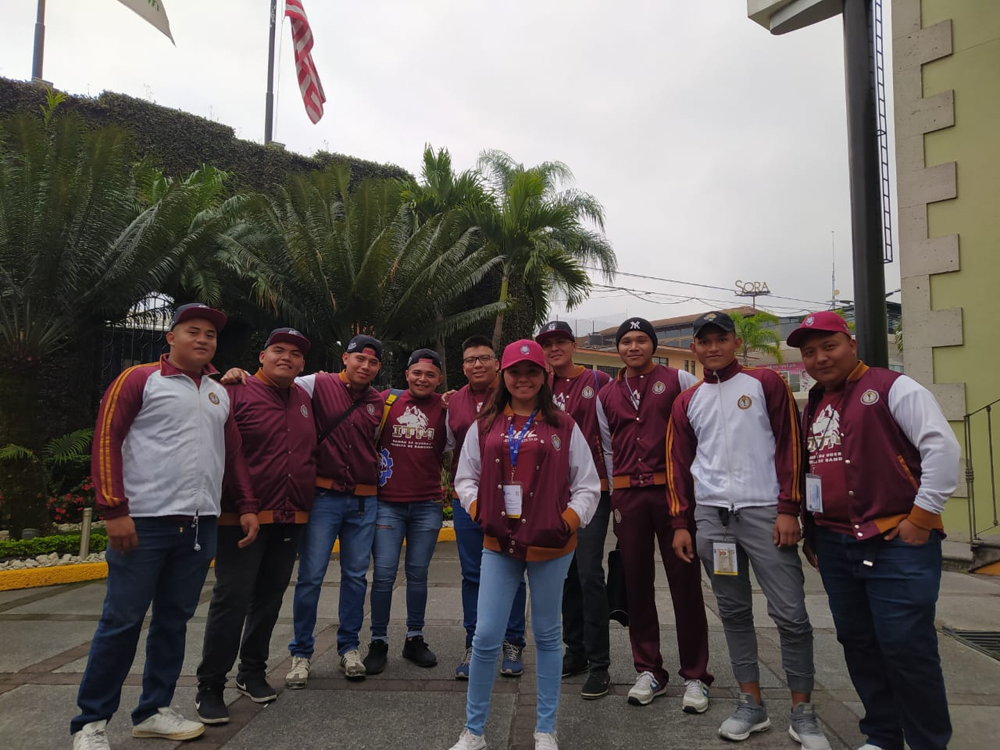
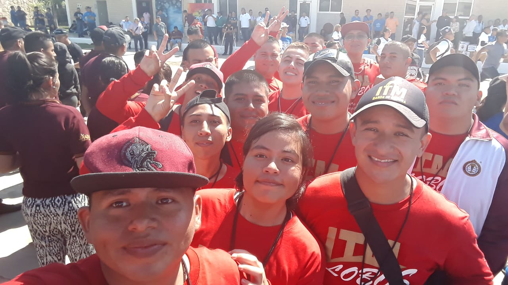
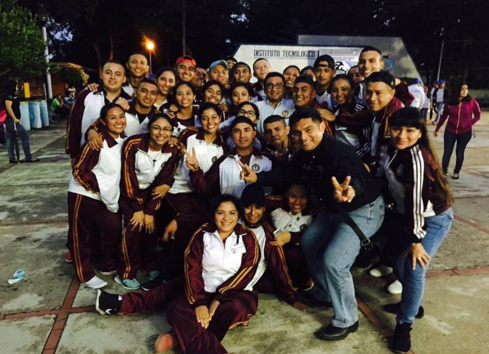

- 
- 
- 
Semblanza
El Grupo Cívico del Instituto Tecnológico de Mérida integrado por la Banda de Guerra y Escolta de Bandera, se reestructura en noviembre del año 2000, siendo Coordinador Cultural el Prof. Joaquín Cortes Villamil (Q. E. P. D). Para febrero del 2002 se debuta en los eventos nacionales de bandas de guerra y escoltas de los institutos tecnológicos asistiendo por primera vez en el 8° encuentro en Ciudad Guzmán, Jalisco. A este primer Encuentro Nacional se han sumado los de:
- 9° Encuentro Durango. 2003
- 10° Encuentro. Morelia. 2004
- 11° Encuentro Zacatecas. 2005
- 12° Encuentro Chihuahua. 2006
- 13° Encuentro Orizaba. 2007
- 14° Encuentro Reynosa. 2008
- 15° Encuentro Tuxtla Gutiérrez. 2009
- 16° Encuentro Distrito Federal. 2010
- 17° Encuentro San Luis Potosí 2011
- 18° Encuentro Minatitlán 2012
- 19° Encuentro La Laguna 2013
- 20° Encuentro Chetumal 2014
- 21° Encuentro Nuevo Laredo 2015
- 22° Encuentro Saltillo 2016
- 23° Encuentro Hermosillo 2017
- 24° Encuentro Cancún 2018
- 25° Encuentro Nuevo León 2019
- 26° Encuentro Orizaba 2020
En el año 2015 se implementan, en la Dirección General del Tecnológico Nacional de México,
los Eventos de Evaluación para seleccionar a los 40 mejores Institutos Tecnológicos del sistema,
los cuales acudirían al Evento Nacional en cuestión. El Grupo Cívico del Instituto Tecnológico de
Mérida ha sido seleccionado en los 6 procesos que hasta hoy se han llevado a cabo.
El Grupo participa en los desfiles del 16 de septiembre y en los desfiles del 20 de noviembre, en estos desfiles se realiza año tras año el concurso de Bandas
de Guerra y Escoltas de Bandera del nivel medio superior y nivel superior, en el cual ha ocupado los
primeros lugares en numerosas ocasiones.
Algunos catedráticos del Instituto Tecnológico
de Mérida formaron parte de las filas de la Banda de Guerra y Escolta de Bandera.
La Banda de Guerra y Escolta de Bandera están integrados por alumnos de las diferentes carreras que ofrece el Instituto
Tecnológico de Mérida.
Actualmente y desde el año 2000 es Instruida por el Promotor Cívico y Equipo Técnico del Área de compromiso Cívico
del Tecnológico Nacional de México Ing. Felipe de Jesús Jiménez Nájera, egresado del Instituto Tecnológico de Mérida. Con el apoyo
incondicional de sus directivos encabezados por el director del Instituto Tecnológico de Mérida Dr. Hebert de Jesús Díaz Flores.